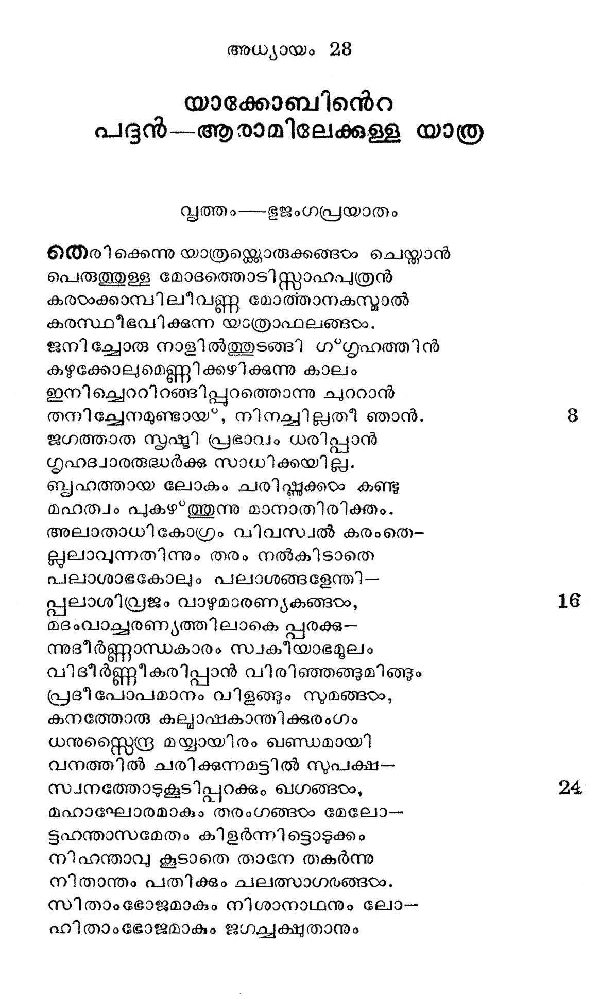
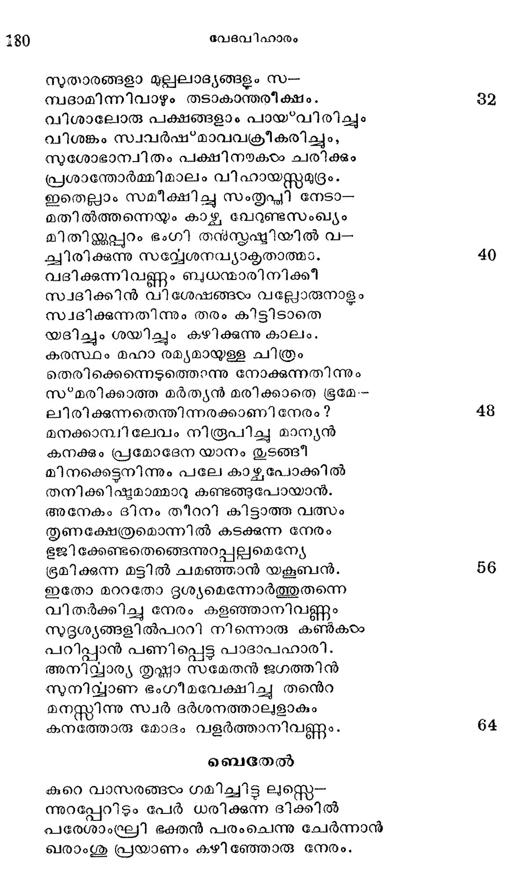
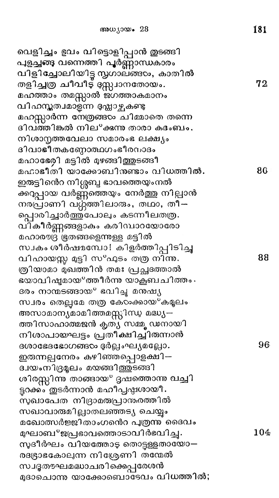
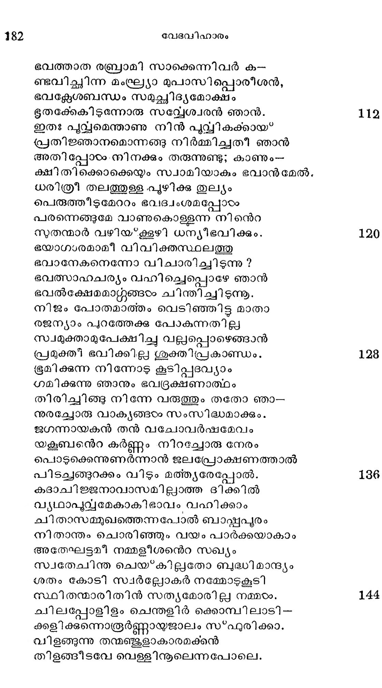
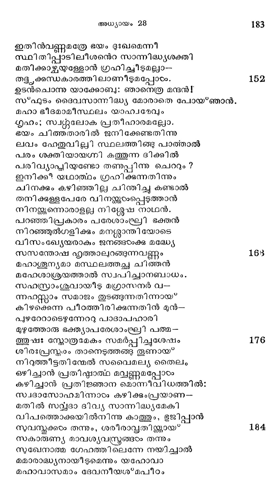
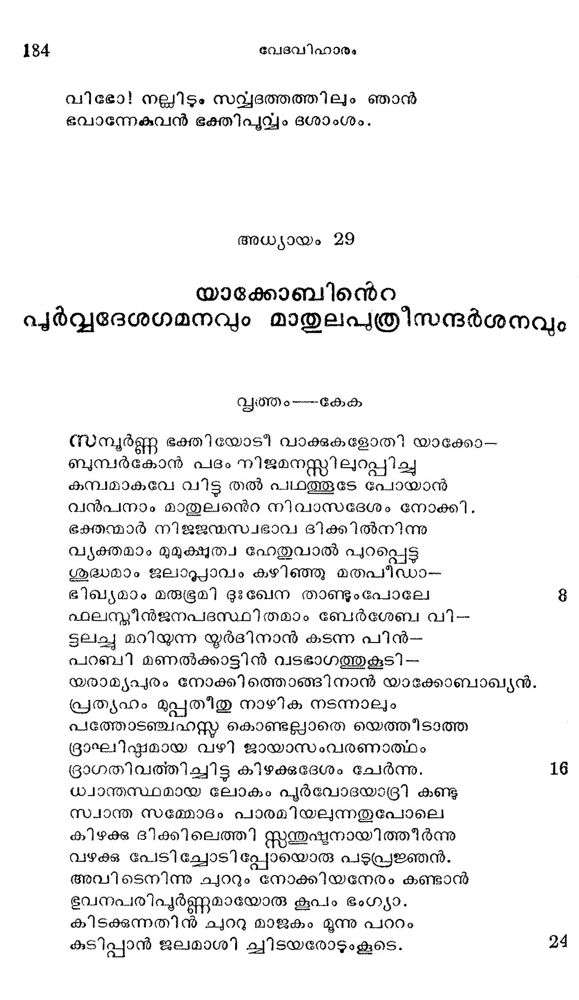

യാക്കോബിന്െറ
പദന്---ആരാമിലേക്കുള്ള യാത്ര
സവ്വത്തം ഭജംഗപ്രയാതം
തെരിക്കെന്നു യാത്രമ്ലൊരുക്കങ്ങം ചെയ്താന്
പെരുത്തുള്ള മോദത്തൊടി(സ്റ്റാഹപുത്രന്
കരഠംക്കാമ്പിലീവണ്ണ മോത്താനകസ്മാല്
കരസ്ഥീഭവിക്കുന്ന യാത്രാഫലങ്ങംം.
ജനി ച്ചോരു നാളി ല്ത്തുടങ്ങി ഗ*ഗൃഹത്തിന്
കഴുക്കോലുമെണ്ണിക്കഴിക്കുന്നു കാലം
ഇനിച്ചെററിറങ്ങിപ്പുറത്തൊന്നു ചുററാന്
തനിച്ചേനമുണ്ടായ്; നിനച്ചില്ചതീ ഞാന്. 8
ജഗത്താത സൃഷ്ടി പ്രഭാവം ധരിപ്പാന്
ഗൃഹദ്വാരര്ദ്ധര്ക്ക് സാധിക്കയില്ല.
ബൃഹത്തായ ലോകം ചരിഷ്കണുക്കം കണ്ടു
മഹത്വം പുകഴ*ത്തുന്നു മാനാതിരിക്തം.
അലാതാധികോഗ്രം വിവസ്വല് കരംതെ-
ലുലാവുന്നതിന്നും തരം നല്കിടാതെ
പലാശാഭകോലും പലാശങ്ങളേന്തി--
പ്പലാശിവ്രജം വാഴുമാരണ്യകങ്ങംം, 16
മദംവാച്ചരണ്യത്തിലാകെ പ്പരക്കു--
ന്നദീര്ണ്ണാസ്ധകാരം സ്വകീയാഭമുലം
വിദീര്ണ്ണീകരിപ്പാന് വിരിഞ്ഞങ്ങുമിങ്ങും
പ്രദീപോപമാനം വിളങ്ങും സുമങ്ങരം,
കനത്തോരു കല്യാഷകാന്തിക്കുരംഗം
ധനുസ്ലൈന്ദ്ര മയ്യായിരം ഖണ്ഡമായി
വനത്തില് ചരിക്കുന്നമട്ടില് സുപക്ഷ--
സ്വനത്തോടുകൂടിപ്പുറക്കും ഖഗങ്ങടം, 24
മഹാഘോരമാകും തരംഗങ്ങടം മേലോ-
ടുഹന്താസമേതം കിളര്ന്നിട്ടൊടുക്കം
നിഹന്താവു കൂടാതെ താനേ തകര്ന്നു
നിതാന്തം പതിക്കും ചലത്സാഗരങ്ങരം.
സിതാംഭോജമാകും നിശാനാഥനും ലോ--
ഹിതാംഭോജമാകം ജഗച്വക്ഷുതാനും

സുതാരങ്ങളാ മുല്പലാദ്യങ്ങളം സ--
മ്പദാമിന്നിവാഴും തടാകാന്തരീക്ഷം.
വിശാലോരു പക്ഷങ്ങളാം പായ*വിരിച്ചും
വിശങ്കം സ്വവര്ഷ”*മാവവക്രീകരിച്ചും,
സശോഭാന്വിതം പക്ഷിനയകഠം ചരിക്കും
പ്രശാന്തോര്മ്മിമാലം വിഹായസ്റ്റമുദ്രം.
ഇതെല്ലാം സമീക്ഷിച്ചു സംതൃപ്തി നേടാ-
മതില്ത്തന്നെയും കാഴ ലേറുണ്ടസംഖ്യം
മിതിയ്ക്കപ്പാം ഭംഗി ത൯സ്കഷ്ടമിയില് ൮-൦
ചിരിക്കുന്നു സല്വേശനവ്യാകൃതാത്മാം
വദിക്കുന്നിവണ്ണം ബുധന്മാരിനിക്കീ
സവദിക്കിന് വിശേഷങ്ങടം വല്ലോരുനാളം
സ്വദിക്കുന്നതിന്നും തരം കിട്ടിടാതെ
യദിച്ചും ശയിച്ചും കഴിക്കുന്നു കാലം.
കരസ്ഥം മഹാ രമ്യമായള്ള ചിത്രം
തെരിക്കെന്നെടുത്തൊന്നു നോക്കുന്നതിന്നും
സ*മരിക്കാത്ത മര്ത്യന് മരിക്കാതെ ഭൂമേ--
ലിരിക്കുന്നതെന്തിന്നരക്കാണി നേരം?
മനക്കാമ്പിലേവം നിരൂപിച്ചു മാന്യന്
കനക്കും പ്രമോദേന യാനം മടങ്ങി
മിനക്കെട്ടനിന്നും പലേ കാഴ്ചപോക്കില്
തനിക്കിഷ്ടമാമ്മാറു കണ്ടങ്ങുപോയാന്.
അനേകം ദിനം തീററി കിട്ടാത്ത വത്സം
തൃുണക്ഷേത്രമൊന്നില് കടക്കുന്ന നേരം
ഭജിക്കേണ്ടതെങ്ങെന്നുറ്പലുമെന്യേ
ഭൂമിക്കുന്ന മട്ടില് ചമഞ്ഞാന് യക്ൂബന്.
ഇതോ മററതോ ദൃശ്യമെന്നോര്ത്തുതന്നെ
വിതര്ക്കിച്ചു നേരം കളഞ്ഞാനിവണ്ണം
സുദൃശ്യങ്ങളില്പററി നിന്നൊരു കണ്കടം
പറിപ്പാന് പണിപ്പെട്ട പാദാപഹാരി.
അനിവ്വാര്യ തൃഷ്ണാ സമേതന് ജഗത്തിന്
സുനിയ്യവാണ ഭംഗീമവേക്ഷിച്ച തന്െറ
മനസ്തിന്ത സ്വര് ദര്ശനത്താലുളാകും
കനത്തോരു മോദം വളര്ത്താനിവണ്ണം.
ബെതേല്
കുറെ വാസരങ്ങരം ഗമീച്ചിട്ട ലുസ്സെ--
ന്നുറപ്പേറിടും പേര് ധരിക്കുന്ന ദിക്കില്
പരേശാംഘഘ്രി ഭക്തന് പരംചെന്നു ചേർന്നാ
ഖരാംശു പ്രയാണം കഴിഞ്ഞോരു നേരം.

വെളിച്ചം ഭൂവം വിട്ടൊളിപ്പാന് തുടങ്ങി
പ്ളച്ചങ്ങു വന്നെത്തി പൂര്ണ്ണാന്ധകദരം
വിളിച്ചോലിയിട്ടു ്ൃഗാലങ്ങടം, കാതില്
തളിച്ചത്ര ചീവീട ഭസ്സവാനതോയം. 72
മഹത്താം തമസ്സാല് ജഗത്താകമാനം
വിഹന്ദത്വമാളന്ന ഭുഷ്ലാഴ്തകണ്ടു
മഹസ്താര്ന്ന നേത്രങ്ങഠം ചിമ്മാതെ തന്നെ
ദിവത്തിങ്കല് നില്*ക്കുന്നു താരാ കദംബം.
നിശാന്ൃത്തവേലാ സമാരംഭ ലക്ഷ്യം
ദിവാഭീതകണ്ബോത്ഥഗംഭീരനാദം
മഹാഭേരി മട്ടില് മുഴങ്ങിത്തുടങ്ങിീ
മഹാഭീതി യാക്കോബിനുണ്ടാം വിധത്തില്. 86
ഇരുട്ടിന്െറ നിശ്ശൂബു ഭാവത്തെയുംനല്
ക്കറ്പ്പായ വര്ണ്ണത്തെയും നേര്ത്തു നില്പാന്
നരപ്രാണി വറ്റ്ത്തിലാരും, തഥാ, തീ-
പ്പൊരിച്ചാര്ത്തുപോലും കടന്നീലതത്ര.
വികീര്ണ്ണങ്ങളാകും കരിമസ്പാറയോരോ
മഹാരട്രദ ഭൂതങ്ങളെന്നുള്ള മട്ടിൽ
സ്വകം ശീര്ഷമമ്പോ! കിളര്ത്തിപ്പിടിച്ചു
വിഹായസ്തു മുട്ടി സ*ഫുടം തത്ര നിന്നു. 88
ത്രിയാമാ മുഖത്തിന് തമഃ പ്രച്ഛദത്താല്
ഭയാവിഷ്ടമായ*ത്തീര്ന്നു യാക്ബചിത്തം.
ഭരം നാന്മടങ്ങായ* ഭവിച്ചു മനുഷ്യ
സ്വരം തെലുമേ തത്ര കേടംക്കായ*കമൂലം
അസാമാന്യമാമിത്തമസ്തിന്ധ മദ്ധ്യ-
തആിിസാഹാത്മജന് കൃത്യ സമ്മ ഡനായി
നിശാപായഘട്ടം പ്രതീക്ഷിച്ചിരുന്നാന്
ദശാഭേദഭോഗങ്ങരം ദുര്ല്ലംഘ്യമല്ലോ. 96
ഇരുന്നല്പനേരം കഴിഞ്ഞപ്പൊളക്ഷി--
ദ്വയംനിദ്രമൂലം മയങ്ങിത്തുടങ്ങി
ശിരസ്റ്റിന്നു താങ്ങായ ദഭൂഷത്തൊന്നു വച്ചി
ട്ടറക്കം തുടര്ന്നാന് മഹീപ്പഷ്ഠശായിീ.
സുഖാപേത നിദ്രാമരുപ്രാന്മരത്തില്
സഖാവാരുമില്ലാതലഞ്ഞട്യ ചെയ്യും
മഖോത്സര്ജ്ജി താംഗനെറ പുത്രന്നു ദൈവം
മുഘാബ'*ജപ്രഭാവത്തൊടാവിര്ഭവിച്ചു. 104
സുദീര്ഘം വിയത്തോട തൊട്ടള്ളതായോ-
രദഭ്രാഭകോലുന്ന നിശ്രേണി തന്മേൽ
സ്വഭൂതഴഘമദ്ധാചരിക്കെപ്പരേശന്
മുദാചൊന്നു യാക്കോബൊടേവം വിധത്തില്;

ഭവത്താത രബ്രാമി സാക്കെന്നിവര് ക-൦
ണ്ടവിച്ഛിന്ന മംഘ്ര്യാ മുപാസിപ്പൊരീശന്,
ഭവക്ശേശബന്ധം സമുച്ഛിദ്യമോക്ഷം
ഭുതക്കേകിടുഭന്നാരു സവ്വേശ്വരന് ഞാന്.
ഇതഃ പുവ്വമെന്താണു നിന് പുവ്വികക്കായ?
പ്രതിജ്ഞാനമൊന്നങ്ങു നിര്മ്മിച്ചതീ ഞാന്
അതിപ്പോടം നിനക്കും തരുന്നുണ്ടു; കാണും--
ക്ഷിതിക്കൊക്കെയും സ്വാമിയാകും ഭവാന് മേൽ.
ധരിത്രീ തലത്തുള്ള പുഴിക്കു തുല്യം
പെരുത്തീടുമേററം ഭവദ്വംശമപ്പോഠം
പരന്നെങ്ങുമേ വാണുകൊള്ളന്ന നിന്െറ
സുതന്മാര് വഴിയ്ക്കൂഴി ധന്യ?ഭവിക്കും.
ഭയാഗാരമാമീ വിവിക്തസ്ഥലത്തു
ഭവാനേകനെന്നോ വിചാരിച്ചിടുന്നു?
ഭവത്സാഹചര്യം വഹിച്ചെപ്പൊഴേ ഞാന്
ഭവല്ക്ഷേമമാറ്ററങ്ങരം ചിന്തിച്ചിടന്നൂ.
നിജം പോതമാത്തം വെടിഞ്ഞിട്ട മാതാ
രജന്യാം പുറത്തേക്കു പോകുന്നതില്ല
സ്വമുക്താമുപേക്ഷിച്ച വല്ലപ്പൊഴെങ്ങാന്
പ്രമുക്തീ ഭവിക്കില്ല ശുക്തിപ്രകാണ്ഡം.
ഭൂമിക്കുന്ന നിന്നോട കൂടിപ്പദവ്യാം
ഗമിക്കുന്നു ഞാനും ഭവദ്രക്ഷണാത്ഥം
തിരിച്ചിങ്ങു നിന്നേ വരുത്തും തതോ ഞാ-
നുരച്ചോരു വാക്യങ്ങഠം സംസിദ്ധമാക്കും.
ജഗന്നായകന് തന് വചോവര്ഷമേവം
യകൂബനന്െറ കര്ണ്ണം നിറച്ചോരു നേരം
പൊടുക്കെന്നുണര്ന്നാന് ജലപ്പോക്ഷണത്താല്
പിടച്ചങ്ങുറക്കം വിടും മത്ത്യരേപ്പോല്.
കദാചിജ്ജനാവാസമാല്യാത്ത ദിക്കില്
വൃഥാപുവ്വമേകാകി ഭാവം വഹിക്കാം
ചിതാസമ്മുഖത്തെന്നപോല് ബാപ്കപുരം
നിതാന്തം ചൊരിഞ്ഞും വയം പാര്ക്കയാകാം
അതേഘട്ടമീ നമ്മളീശനന്െറ സഖ്യം
സ്വതേചിന്ത ചെയ്കില്ലതോ ബുദ്ധിമാന്ദ്യം
ശതം കോടി സാര്ല്ലോകര് നമ്മോടുകൂടി
സ്ഥിതന്മാരിതിന് സത്യമോരില്ല നമ്മഠം.
ചിലപ്പോളിളം ചെന്തളിര് ക്കൊമ്പിലാടി-
ക്കളിക്കുന്നൊരൂര്ണ്ണായജാലം സ*ഫുരിക്കാ.
വിളങ്ങുന്നു തന്മഞ്ജുളാകാരമക്കന്
തിളങ്ങീടവേ വെള്ളിനുലെന്നപോലെ.

ഇതിന്വണ്ണമത്രേ ഭയം ഭുഃഖമെന്നീ
സ്ഥിതിപ്പാടിലീശനന്െറ സാന്നിദ്ധ്യശക്തി
മതിക്കാഴ്ചയള്ളോന് ഗ്രഹിചിടുമല്ലാ-
തള്ൃക്കന്ധകാരത്തിലാണീടുമപ്പോടം. 1852
ഉടന്ചൊന്നു യാക്കോബു: ഞാനെത്ര മന്ദന്!
സ്ഫുടം ദൈവസാന്നിദ്ധ്യ മോരാതെ പോയ്ഞാന്.
മഹാ ഭീദമാമീസ്ഥലം യാഹ്വരേവും
ഗൃഹം; സ്വന്റലോക പ്രതീഹാരമല്ലോ.
ഭയം ചിത്തതാരില് ജനിക്കേണ്ടതിന്നു
ലവം ഛേതുവില്ലി സ്ഥലത്തിങ്ങു പാത്താല്
പരം ശക്തിയായഗ്നി കത്തുന്ന ദിക്കിൽ
പ്രിവ്യാപ്ലിയണ്ടോ തണുപ്പിന്നു ചെററും ?
ഇനിക്ക് യഥാത്ഥം ഗ്രഹിക്കുന്നതിന്നും
ചിനക്കം കഴിഞ്ഞില്ല ചിന്തിച്ചു കണ്ടാല്
തനിക്കള്ളപേരേ വിനയ്ക്കുടപ്പെടത്താന്
നിനയ്ക്കുന്നൊരാളല്ല നിശ്ലേഷ നാഥന്.
പറഞ്ഞിപ്രകാരം പരേശാംഘല്രി ഭക്തന്
നിറഞ്ഞുല്ഗളിക്കും മന്റ്മാനത്തിയോടെ
വിസംഖ്യേയരാകും ജനങ്ങരഠംക്കു മദ്ധ്യേ
സസന്തോഷ ഹൃത്താലുറങ്ങുന്നവണ്ണം 16813
മഹാശൂന്യമാ മസ്ഥലത്തച്ഛ ചിത്തന്
മഫഹേശാശ്രയത്താല് സ്വപിച്ചാനബാധം.
സഹസ്രാംശുവായിട മഗ്രാസനര് ൮-൦
ന്നഹസ്താം സമാജം തുടങ്ങുന്നതിന്നായ*
കിഴക്കെന്ന പീഠത്തിരിക്കുന്നതിന് മുന്--
പുഴറേറാടെഴുന്നേററു പാദാപഹാരി
മുഴുത്തോരു ഭക്ത്യാപരേശാംഘ്രി പത്മ-
ആഷഃ സ്നോത്രമേകം സമര്പ്പിച്ചുശേഷം 176
ശിരഃപ്രസ്മം താനെടുത്തങ്ങു തൂണായ
നിറുത്തീട്ടതിന്മേല് സവൈമല്ൃയ തൈലം
ഒഴിച്ചാന് പ്രതിഷ്ഠാത്ഥ മവ്വണ്ണമപ്പോഠം
കഴിച്ചാന് പ്രതിജ്ഞാന മൊന്നീവിധത്തില്:
സ്വദാസോഹമിന്നാടം കഴിക്കുംപ്രയാണ-
മതില് സവ്യവദാ ദിവ്യ സാന്നിഭദ്ധ്യമേകി
വിപത്തൊക്കയില്നിന്നു കാത്തും, ഭൂജിപ്പാന്
സുവസ്തുക്കഠം തന്നും, ശരീരാവ്ൃതിയ്ക്കായ* 184
സകാരുണ്ൃ മാവശ്യവസ്ത്രങ്ങഠം തന്നും
നുഖേനാത്മ ഗേഹത്തിലെന്നേ നയിച്ചാല്
മമാരാദ്ധ്യനായീടുമെന്നും യഹോവാ
മഹാവാസമാം ദേവനീയശ*മപീഠം

വിഭോ! നല്ലിടും സവ്വദത്തത്തിലും ഞാന്
ഭവാന്നേകുവന് ഭക്തിപുവ്വം ദശാംശം.
